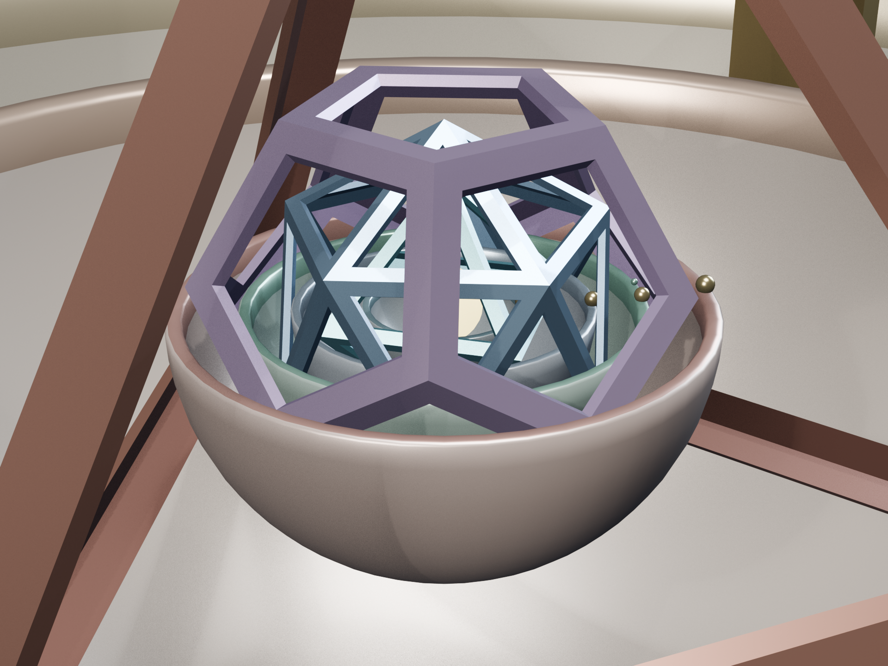

Chapter II: Curved and Straight — Cusanus & the Five Solids¶
In this one matter above all, Nicholas of Cusa (De Docta Ignorantia, 1440) and others seem truly divine to me: namely, that they esteemed so highly the mutual relationship between the Straight (rectum) and the Curved (curvum), and dared to liken the Curved to God Himself, but the Straight to created beings. For in the outermost spherical surface of the fixed stars—centered upon the Sun and embracing the intermediate ethereal space—shines forth the image of the eternal Trinity; whereas the rectilinear corporeal boundaries of created magnitudes must be drawn within the sphere by inscription and circumscription.
Now if any rectilinear figures are to prescribe a finite limit to the number of mobile planetary orbs, they must share the perfection of uniformity, having all faces congruent regular polygons and all solid angles equal. Yet Euclid demonstrates in Book XIII (Elements XIII.18) that around a solid vertex at least three plane angles must meet with sum strictly less than four right angles ($360^\circ$), permitting solely:
Three, four, or five equilateral triangles ($3 \times 60^\circ = 180^\circ$, Tetrahedron; $4 \times 60^\circ = 240^\circ$, Octahedron; $5 \times 60^\circ = 300^\circ$, Icosahedron);
Three squares ($3 \times 90^\circ = 270^\circ$, Cube);
Three regular pentagons ($3 \times 108^\circ = 324^\circ$, Dodecahedron);
while six triangles ($6 \times 60^\circ = 360^\circ$), four squares ($4 \times 90^\circ = 360^\circ$), or four pentagons ($4 \times 108^\circ = 432^\circ$), as well as three hexagons ($3 \times 120^\circ = 360^\circ$), either flatten into a plane or exceed solid closure altogether. Because five solid intervals require six bounding spherical orbs, the Creator established six mobile planets around the Sun.


